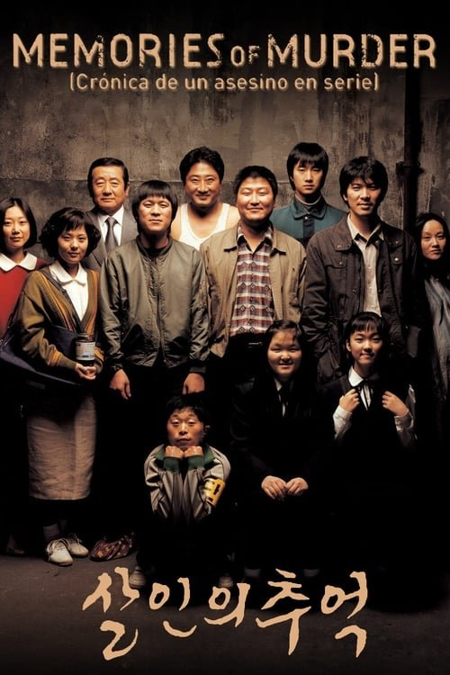

Memories of Murder (Crónica de un asesino en serie) (2003)
Sinopsis Rápida
En la Corea del Sur de 1986, una serie de brutales asesinatos sacude a una pequeña comunidad. Dos detectives, con métodos opuestos y una creciente frustración, se enfrentan a un asesino en serie que se les escapa entre los dedos.
Sinopsis Detallada
Basada en hechos reales, "Memories of Murder" nos sumerge en la atmósfera opresiva de una investigación policial en la rural Corea del Sur de los 80. La película sigue a dos detectives con personalidades radicalmente diferentes mientras intentan atrapar a un despiadado asesino en serie que aterroriza la región. La tensión va en aumento a medida que los métodos anticuados chocan con la incipiente modernidad, reflejando la frustración y el fracaso del sistema ante un crimen que parece sin resolver. La atmósfera, magistralmente lograda, te mantendrá al borde del asiento hasta el impactante desenlace.
¿Por qué tenés que verla?
- Una investigación policial tensa y absorbente que te dejará sin aliento.
- La dirección de Bong Joon-ho, mostrando su maestría narrativa incluso en sus inicios.
- Una película que trascendió fronteras y se convirtió en un clásico del cine surcoreano, influyendo en producciones posteriores.
- La exploración de la ineficiencia y la corrupción en el sistema policial.
Idea Extra
Comparación entre la película y los crímenes reales que la inspiraron: ¿Qué tan fiel es la adaptación? Análisis de la evolución del cine de género surcoreano con "Memories of Murder" como punto de partida.